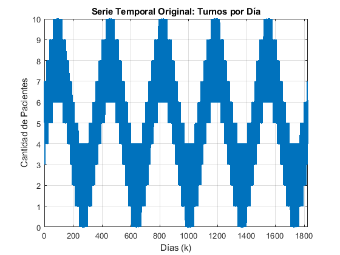
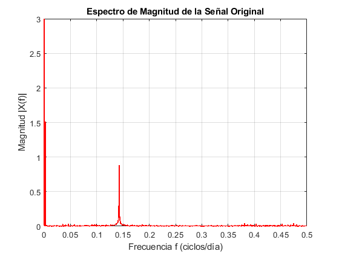
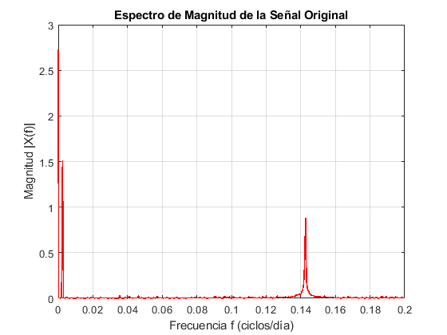
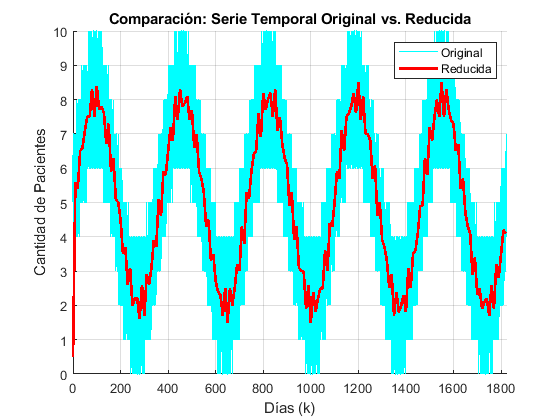
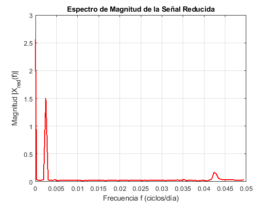
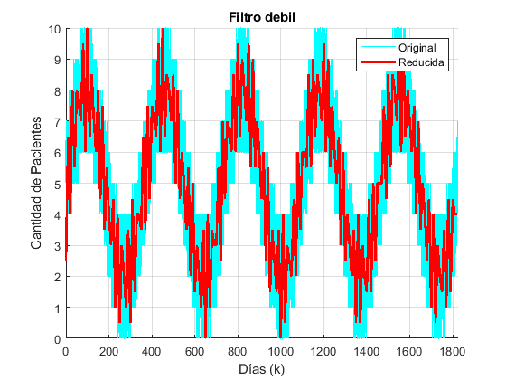
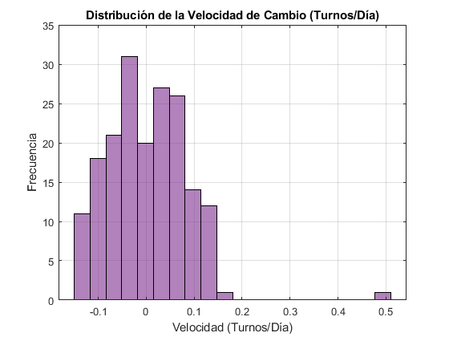

Contents
- APELLIDO, NOMBRE: LEGAJO
- Garcia Sad, Tomas Agustin: 14077
- PARCIAL I: CONTROL Y SISTEMAS
- Contexto
- Objetivo
- Criterio de evaluaión
- Tareas a desarrollar
- 1. Análisis Previo de los Datos
- 2. Pre-Proceso
- 3. Generar serie final y gráficos
- 3. Generar serie final y gráficos
- 4. Validación de la respuesta
- 5. Tasa de Cambio (Derivada) y Punto Fijo
clc, clear, close all;
APELLIDO, NOMBRE: LEGAJO
Garcia Sad, Tomas Agustin: 14077
PARCIAL I: CONTROL Y SISTEMAS
Contexto
Estás analizando la cantidad de turnos atendidos en un consultorio médico. El sistema registra diariamente el número de pacientes atendidos, generando una serie temporal discreta x[k], donde cada muestra representa un día.
Objetivo
El equipo de gestión solicita elaborar un reporte resumido con un valor representativo cada 10 días, con el objetivo de facilitar el monitoreo operativo y la planificación de recursos a largo plazo, eliminando las fluctuaciones diarias irrelevantes para la tendencia general anual.
Criterio de evaluaión
“No se evaluará únicamente el resultado numérico, sino la calidad del razonamiento técnico y la justificación de las decisiones de diseño.”
"Cuide la presentación, escala, colores, títulos y leyendas de sus gráficos para hacerlos lo más legible posible para la evaluación."
Tareas a desarrollar
Diseñar e implementar en MATLAB un script que permita reducir la serie temporal original. La salida debe ser una nueva serie reducida que entregue un valor representativo cada 10 días.
1. Análisis Previo de los Datos
Seleccione y aplique comandos de MATLAB para estudiar la señal original y extraer la información relevante.
%------ x = load('datos_turnos.txt'); x = x(:); N = length(x); k = 0:N-1; figure; plot(k, x, 'LineWidth', 1.5); title('Serie Temporal Original: Turnos por Día'); xlabel('Días (k)'); ylabel('Cantidad de Pacientes'); grid on; xlim([0, N]); % Ajusta el eje X % --- Análisis en el Dominio de la Frecuencia (Física) --- Fs = 1; % Frecuencia de muestreo: 1 muestra/día X_f = fft(x); % Transformada Rápida de Fourier X_mag = abs(fftshift(X_f)) / N; % Espectro de magnitud centrado y normalizado % Creación del eje de frecuencias físicas (ciclos/día) f = linspace(-Fs/2, Fs/2 - Fs/N, N); figure; plot(f, X_mag, 'r', 'LineWidth', 1.2); title('Espectro de Magnitud de la Señal Original'); xlabel('Frecuencia f (ciclos/día)'); ylabel('Magnitud |X(f)|'); xlim([0 Fs/2]); % Acotamos hasta la frecuencia de Nyquist (0.5 ciclos/día) grid on; figure; plot(f, X_mag, 'r', 'LineWidth', 1.2); title('Espectro de Magnitud de la Señal Original'); xlabel('Frecuencia f (ciclos/día)'); ylabel('Magnitud |X(f)|'); xlim([0 0.2]); % Acotamos hasta la frecuencia de Nyquist (0.5 ciclos/día) grid on; %------



1.1 Justifique brevemente la elección de dichas herramientas
% Con la base de utilizar el archivo 'datos_turnos.txt' como base de los % datos, se puso con forma de vector columna por si hubo problema al cargar % la informacion. Luego se genero un vector de tiempo con la longitud de la % cantidad de datos con los cuales se cuenta. Finalmente Se imprimió esta % informacion en un gráfico que permita ver la cantidad de pasientes en % funcion del día. Tambien se realizó un gráfico en el dominio de la % frecuencia para mayor obtención de informacion
1.2 Explique los resultados obtenidos del análisis
% Se puede observar en la gráfica la información de cuantas personas se % atienden por día. Esto parece tener una forma peoriodica, con un periodo % de aproximadamente 1 año. Quiero tener la informacion cada 10 días previo % a su desarrollo.
1.3 Mencione qué información le resulta relevante y útil para la solución.
% La información mas relevante en este caso es que se desea tener la informacion cada 10 días. % Otro aspecto importante es que la nueva frecuencia máxima representable (Nyquist) % será fc = 0.05 ciclos/día (Fs / 2M). %El espectro revela componentes de alta frecuencia (fluctuaciones diarias) superiores a fc. % Esto confirma la necesidad de aplicar un filtro pasabajos con frecuencia de corte en 0.05 antes % de submuestrear
2. Pre-Proceso
Proceda a realizar el tratamiento de la señal
%Primero procesamos la señal con filtro antialiasing N_ma = 10; % Tamaño de la ventana b_xr = (1/N_ma) * ones(1, N_ma); % a_xr = 1; % % Aplicación del filtro x_filtrada = filter(b_xr, a_xr, x); fs_new =Fs/N_ma; % 1. Decimación de la señal filtrada usando tu estructura x_reducida = x_filtrada(1:round(Fs/fs_new):end); k_reducido = k(1:round(Fs/fs_new):end); %-----------------------------------------
2.1 Comente brevemente sobre el método elegido para el pre-procesamiento.
% Para el preprocesamiento se eligio utilizar un filtro pasa bajo para % obtener los valores mas representativos de la señal ya que de esta manera % se filtran los valores de alta frecuencia como la variación día a dia.
2.2 ¿Por qué dicha técnica es necesaria y adecuada para este problema específico? (considerando el contenido frecuencial).
% Esto es necesario debido a que la variacion día a dia es bastante alta, y % como queremos muestrear cada 10 días, esta variacion es muy poca % representativa. Por lo que se intenta eliminar ese tipo de "ruido"
2.3 Mencione los criterios utilizados para definir los parámetros del sistema de procesamiento.
% El principal criterio utilizado es el de intentar descartar la frecuencia % alta mediante un filtro de media movil, haciendo uso para este del mismo % parámetro que se utilizará al diezmar. Esto permite reducir la alta % frecuencia y obtener una señal mas limpia. Mediante diversas pruebas, % este filtro es el que dio mejor resultado comparado con los de ventana en % el dominio de la frecuencia
3. Generar serie final y gráficos
A partir del procesamiento anterior, generar la serie final y grafiquela en el tiempo y la frecuencia. Asegurarse de que la alineación temporal sea correcta respecto a la señal original.
3. Generar serie final y gráficos
A partir del procesamiento anterior, generar la serie final y grafiquela en el tiempo y la frecuencia. Asegurarse de que la alineación temporal sea correcta respecto a la señal original.
% --- 3.1 Gráficos en el Dominio del Tiempo --- figure; hold on; plot(k, x, 'c', 'LineWidth', 1, 'DisplayName', 'Original'); plot(k_reducido, x_reducida, 'r-', 'LineWidth', 2, 'DisplayName', 'Reducida'); title('Comparación: Serie Temporal Original vs. Reducida'); xlabel('Días (k)'); ylabel('Cantidad de Pacientes'); legend('show'); grid on; xlim([0, N]); hold off; % --- 3.2 Gráficos en el Dominio de la Frecuencia (Señal Reducida) --- N_red = length(x_reducida); X_f_red = fft(x_reducida); X_mag_red = abs(fftshift(X_f_red)) / N_red; % Eje de frecuencias para la nueva señal (llega hasta fs_new/2 = 0.05) f_red = linspace(-fs_new/2, fs_new/2 - fs_new/N_red, N_red); figure; plot(f_red, X_mag_red, 'r', 'LineWidth', 1.5); title('Espectro de Magnitud de la Señal Reducida'); xlabel('Frecuencia f (ciclos/día)'); ylabel('Magnitud |X_{red}(f)|'); xlim([0 fs_new/2]); % Mostramos hasta el nuevo límite de Nyquist grid on;


4. Validación de la respuesta
Comparar su solución con al menos una alternativa que considere incorrecta o subóptima para validar por contraste la suya.
N_ma2 = 2; % Tamaño de la ventana b_xr2 = (1/N_ma2) * ones(1, N_ma2); a_xr2 = 1; % Aplicación del filtro x_filtrada2 = filter(b_xr2, a_xr2, x); fs_new2 =Fs/10; % 1. Decimación de la señal filtrada usando tu estructura x_reducida2 = x_filtrada2(1:round(Fs/fs_new2):end); k_reducido = k(1:round(Fs/fs_new2):end); % --- Gráficos en el Dominio del Tiempo2 --- figure; hold on; plot(k, x, 'c', 'LineWidth', 1, 'DisplayName', 'Original'); plot(k_reducido, x_reducida2, 'r-', 'LineWidth', 2, 'DisplayName', 'Reducida'); title('Filtro debil'); xlabel('Días (k)'); ylabel('Cantidad de Pacientes'); legend('show'); grid on; xlim([0, N]); hold off;

4.1 Qué efectos negativos produce la alternativa subóptima (en el dominio del tiempo y/o frecuencia).
% Se eligio un filtro de media movil con menor atenuacion. Al promediar % valores por sobre los que se decimaran, la amplitud de frecuencias altas % no se ve reducida, indicando que el filtro no permite ver informacion que puede ser % valiosa % Otra opcion es elegir un filtro de media movil con mayor atenuacion. Al promediar % valores por sobre los que se decimaran, la amplitud de frecuencias bajas % se ve reducida, indicando que el filtro no permite ver informacion que puede ser % valiosa. Ademas, esto puede generar una respuesta con demasiado retardo % en el tiempo
4.2 Por qué su solución propuesta mitiga estos efectos.
% La solucion implementada toma un valor mucho mas conservador, por lo que % mitiga menos las amplitudes de baja frecuencia
5. Tasa de Cambio (Derivada) y Punto Fijo
Se nos comunica que conocer solo la cantidad total de pacientes ya no es suficiente para organizar el consultorio. Ahora necesitamos saber qué tan rápido sube o baja esa cantidad. Esta "velocidad de cambio" de la demanda se calcula directamente usando la derivada matemática.
Como ingeniero proponés usar representación en punto fijo para optimizar el sistema: buscamos aumentar la velocidad de cálculo y minimizar el uso de memoria.
- Construya la velocidad de cambio de su señal resultado del ejercicio anterior en (turno/día).
- Analice cómo se distribuyen los valores de su señal (usando un histograma o gráfico).
- A partir de esa observación, determine un formato en punto fijo conveniente que ajuste para dicho rango
- Indique de su respuesta: N tamaño de la palabra binaria (8,16 o 32 bits) y los m bits para la parte entera, n bits para la parte fraccionaria usando la notación Qm.n (con 1 bit de signo), rango, resolución y ruido cuantización
%%Completar con los resultados obtenidos:
- Palabra binaria: 16 bits
- Representación: Q1.14 (1 bit de signo, 1 bit entero, 14 bits fraccionarios)
- Rango: [-2, 1.9999]
- Resolución: 2^-14 (aprox. 0.000061)
- Ruido de cuantización: +/- 2^-15 (error máximo de cuantización, aprox. +/- 0.000030)
% 1. Derivada discreta (diferencia finita) dt = 10; % El paso temporal entre muestras reducidas es de 10 días velocidad = diff(x_reducida) / dt; % 2. Histograma para analizar la distribución figure; histogram(velocidad, 20, 'FaceColor', '#7E2F8E'); title('Distribución de la Velocidad de Cambio (Turnos/Día)'); xlabel('Velocidad (Turnos/Día)'); ylabel('Frecuencia'); grid on; % Obtenemos los valores máximo y mínimo para comprobar el Punto Fijo max_v = max(velocidad); min_v = min(velocidad); fprintf('La velocidad varía entre %.4f y %.4f turnos/día.\n', min_v, max_v); fprintf('El formato Q1.14 (Rango +/- 2) es perfecto para contener estos valores sin desbordamiento.\n'); %-----------------------------------------
La velocidad varía entre -0.1500 y 0.5100 turnos/día. El formato Q1.14 (Rango +/- 2) es perfecto para contener estos valores sin desbordamiento.
